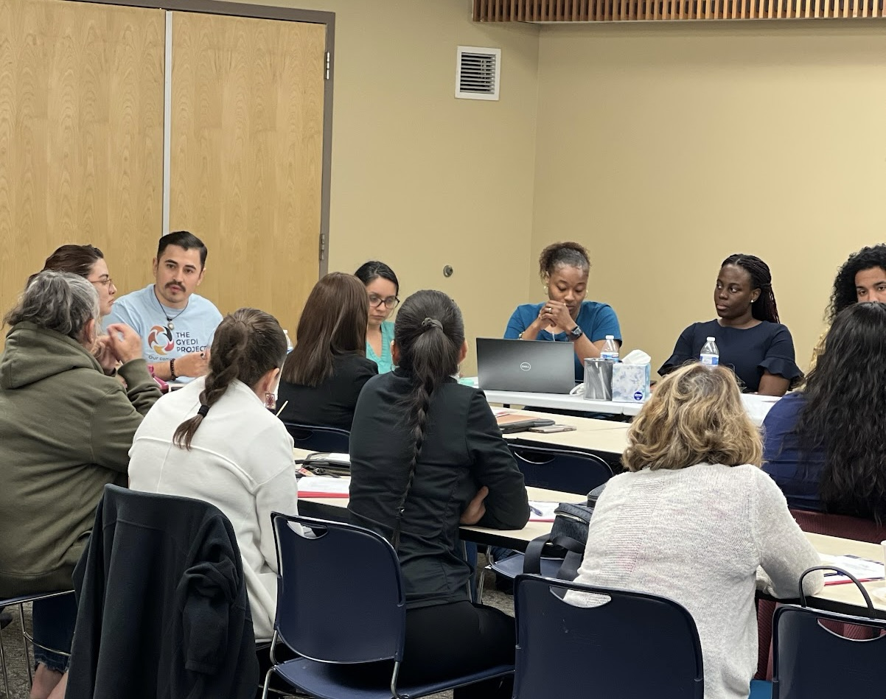
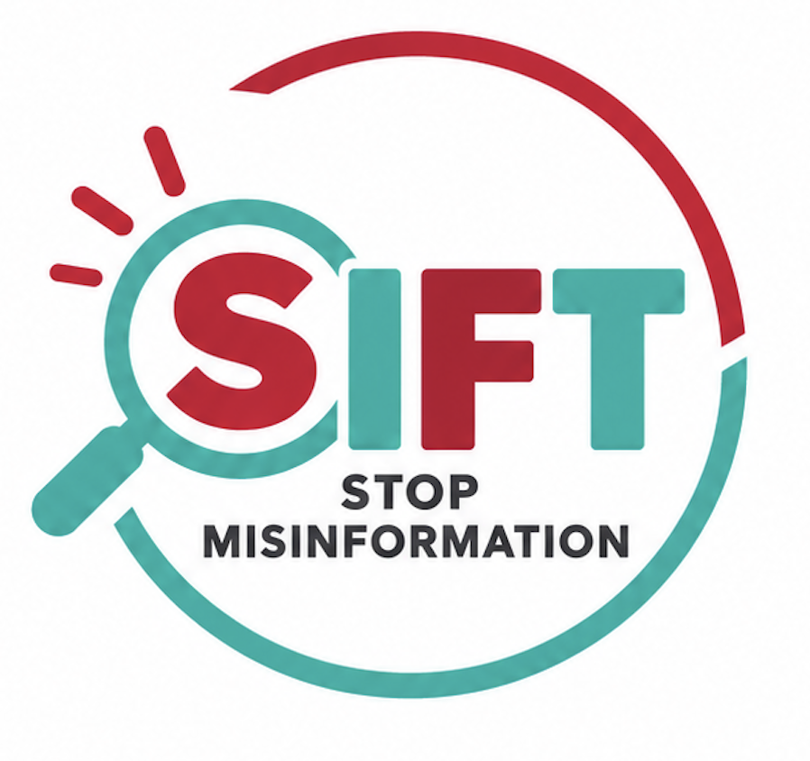

El acceso a educacion sobre la salud que es objetiva, actual, y relevante para la comunidad es esencial para mejorar el conocimiento y tener la informacion para tomar decisiones informadas sobre la salud.
En nuestros programas educativos, nosotros nos enfocamos en traer la informacion y professionales de la salud a la comunidad, para que los miembros de la comunidad puedan aprender y hacer preguntas en un ambiente seguro y culturalmente relevante.
Reconocemos que las barreras del idioma, el acceso a la información y las experiencias culturales pueden influir en la manera en que las personas buscan, comprenden y utilizan información y servicios de salud.
La alfabetización en salud va más allá de comprender información médica. Implica contar con los conocimientos y las habilidades para encontrar, comprender, evaluar y utilizar información para tomar decisiones sobre la salud.
Nuestros esfuerzos educativos enfatizan el aprendizaje culturalmente relevante, el uso de lenguaje accesible y la información práctica que los miembros de la comunidad pueden aplicar en su vida cotidiana.

El acceso a información de salud confiable es esencial para tomar decisiones informadas. Sin embargo, las afirmaciones engañosas sobre la salud, las barreras del idioma y la información que cambia rápidamente pueden dificultar la identificación de fuentes confiables.
Nuestra iniciativa presenta a los miembros de la comunidad SIFT, un método práctico para evaluar información e identificar afirmaciones engañosas.
A través de una educación interactiva y culturalmente relevante, buscamos fortalecer la alfabetización digital en salud y aumentar la confianza para evaluar información relacionada con la salud.
También buscamos evaluar los cambios en los conocimientos, la confianza y la capacidad de los participantes para aplicar las estrategias de SIFT.

Invitamos a organizaciones comunitarias, educadores, profesionales de la salud e instituciones interesadas en colaborar con nosotros para ampliar el acceso a educación en salud culturalmente relevante en Aurora.
Participa